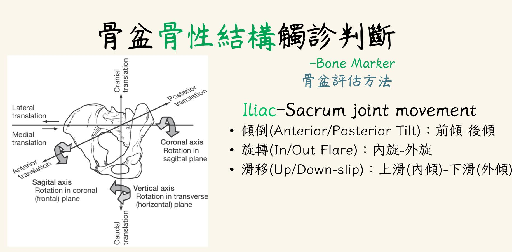

上週日的肌筋膜中醫讀書會2023myofascialTCM讀書會，很榮幸有30分…
上週日的肌筋膜中醫讀書會2023myofascialTCM讀書會，很榮幸有30分鐘的機會分享關於骨盆徒手治療常用的檢查方法🤗🤗🤗
從接觸傷科開始，第一個最吸引我的區塊就是骨盆，這次的錄製影片可以說是整理了這幾年學習骨盆的原理、技術都集合在這裡了。
骨盆作為人體核心樞紐，其內保護著許多重要的臟器，裡面錯綜複雜的筋膜、韌帶與骨性結構相鄰，空間錯位的歪斜，勢必影響相關臟器的功能與運作，進一步產生疾病與困擾，因此恢復骨盆的正位與該有的活動度，就變成是一件非常重要的事情！
骨盆的錯位至少要從XYZ三軸向來觸診分析，絕不是一般民俗調理左右各凹一下、咖啦一聲就調整完成，3D立體空間下的結構、角度方向與力道拿捏都是必須注意、要求的重點！。
總之，骨盆是個非常重要又非常複雜的區域，很榮幸能有這個機會，整理並分享關於骨盆結構學理與觸診技巧，希望大家都能有一個健康靈敏的骨盆☺️☺️☺️
#徒手治療常用的骨盆評估方法
太初中醫診所 東門中醫
中醫師 黃彥鈞
